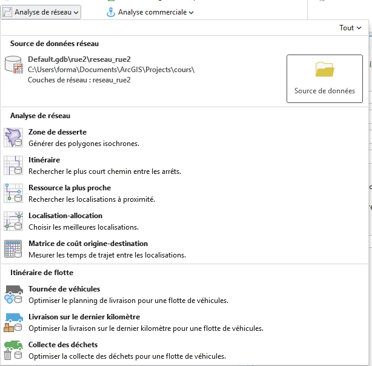
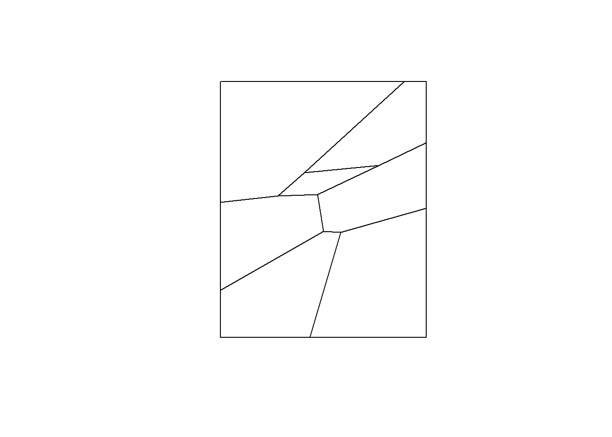
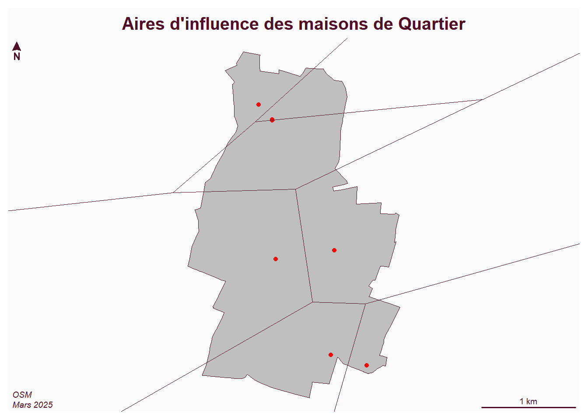
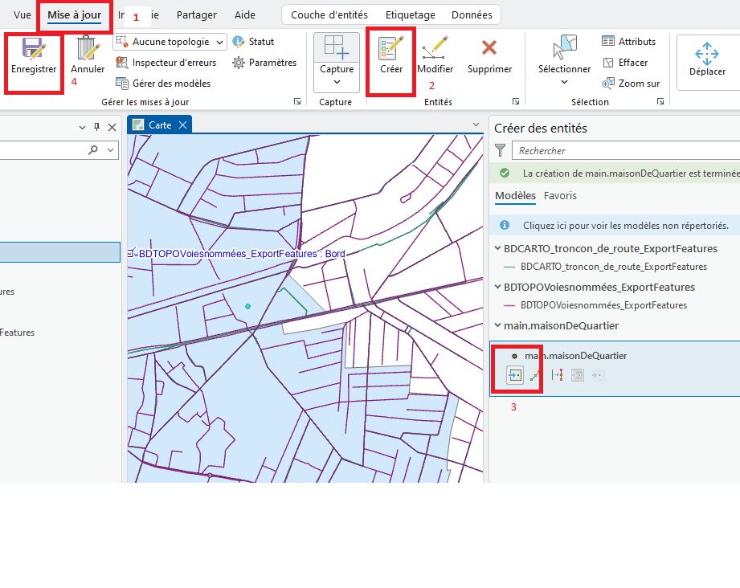
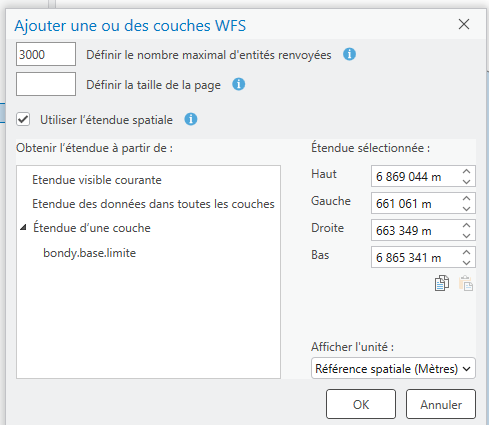
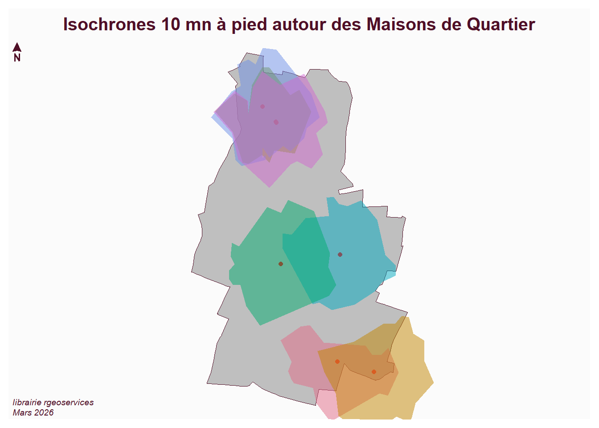

Au niveau d’Arcgis, c’est la barre d’outils network analyst

La distance est une composante essentielle en géographie, notamment car elle mène à l’analyse spatiale qui peut être considérée comme une autre famille de traitements spatiaux.
Plutôt que de passer en revue tous les outils (cf TD groupe 3), l’idée est d’évoquer
un traitement simple : les aires d’influence
un traitement plus complexe : une analyse d’accessibilité
Cela permet d’utiliser
la distance à vol d’oiseau (= euclidienne)
et la distance basée sur un réseau
Donnée : utilisation de la BPE
Il faut avoir un ensemble de points autour desquels, au niveau de la communal, calculer les aires d’influence et l’accessibilité.
Il serait intéressant de récupérer les réseaux des maisons de quartier.
Mais de tels équipements n’existent pas dans toutes les communes.
C’est pouquoi on télécharge la BPE2024, et on extrait tous les équipements de la catégorie Action sociale pour enfants en bas-âge (D5) dans laquelle est la catégorie centres sociaux
Code
download.file("https://www.insee.fr/fr/statistiques/fichier/8217525/BPE24.zip", "data/gros/BPE24.zip")unzip("data/gros/BPE24.zip", exdir ="data/gros")bpe <-read.csv2("data/gros/BPE24.csv", dec=".")choix <-read.table("data/choix.csv")choix <- choix$V1# filtre sur la commune et la catégoriebpe2 <- bpe [bpe$DEPCOM %in% choix & bpe$SDOM =='D5',]bpe2 <- bpe2 [!is.na(bpe2$LAMBERT_X), ]bpe2 <-st_as_sf(bpe2, coords =c("LAMBERT_X", "LAMBERT_Y"), crs =2154)st_write(bpe2 [,c("NOMRS","TYPEQU", "DEPCOM")], "data/cours7.gpkg", "bpe", quiet = T, delete_layer = T)table(bpe2$DEPCOM)
Code
# ex Bondysel <- bpe2 [bpe2$DEPCOM ==93010,]table(sel$TYPEQU)png("img/bpeBondy.png")mf_map(sel, type ="typo", var ="TYPEQU")mf_layout("Action sociale pour enfants en bas-âge (51 pts)", "BPE2024")dev.off()
Tout résident dans le polygone ira vers l’équipement.
Code
library(sf)
Linking to GEOS 3.13.1, GDAL 3.11.4, PROJ 9.7.0; sf_use_s2() is TRUE
Code
data <-st_read("data/cours7.gpkg", "maisonDeQuartier", quiet = T)v <-st_voronoi(st_union(data))v <-st_collection_extract(v,"POLYGON")plot(v)

Code
library(mapsf)commune <-st_read("data/bondy.gpkg", "commune", quiet=T)mf_map(commune)mf_map(data, col="red", add = T)mf_map(v, add = T, col =NA)mf_layout("Aires d'influence des maisons de Quartier", "OSM\nMars 2025")

Faire l’opération dans Arcgis. Que se passe-t-il ?
Pour éviter que l’opération ne couvre pas la commune, placer 4 points déterminant la bbox. (se référer à la procédure Comment créer des entités dans les généralités du moodle)

Accessibilité (= isochrone)
Nécessité d’un réseau topologique sous Arcgis
La démarche
La mise en place du réseau sous Arcgis se fait en différentes étapes :
création du jeu de classes d’entités dans la gdb (au niveau de la gdb, nouveau / jeu de classes d’entité)
importation de la classe d’entité shape issue de la BD TOPO (au niveau du jeu, importer / cl d’entité)
création du jeu de données réseau (outil créer un jeu de données réseau / pas d’altitude, la cible est le jeu défini au départ)
La donnée : BD TOPO
Cette opération est complexe notamment car la récupération du réseau de la BD TOPO représente des gros volumes de données.
Le flux est utile à partir d’une échelle au 1/25 0000e.
Dans Arcgis, charger la couche de la commune, cliquer glisser sur l’espace carte, ne pas oublier de côcher étendue de la couche.

Les deux couches sont :
tronçons de route (les routes principales)
voies nommées (les routes internes à la commune)
Ce jeu de données peut servir de base au réseau et aux différentes propositions du TD groupe 3.
En TD, nous essaierons juste de créer le réseau à partir de la couche tronçons de route
Il existe également une alternative plus simple.
Les API de l’IGN et le nouveau Géoportail (Cartes.gouv)
Aujourd’hui, l’IGN met à disposition des outils qui permettent de faire des itinéraires ou des traitements autour des distances par le biais d’API. Tout se passe au niveau de Carte.gouv, le remplaçant du Géoportail.
Pour le TD, créer quelques isochrones avec cet outil et les importer dans Arcgis.
R : obtenir un ensemble d’isochrones basé sur l’API
Sous R, on utilise une librairie qui permet d’avoir une syntaxe simple de cette API. On peut ainsi reprendre le fichier des maisons de quartier et obtenir les isochrones.
commune <-st_transform(commune, 4326)mf_map(commune)mf_map(data, col ="red", add = T)mf_map(accessibilite, type="typo", var ="nom", add = T, alpha =0.5, border =NA, leg_pos=NA)mf_layout("Isochrones 10 mn à pied autour des Maisons de Quartier", "librairie rgeoservices\nMars 2026")

The scale bar does not work on unprojected (long/lat) maps.